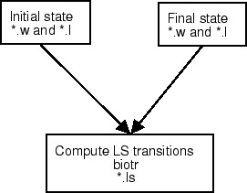

|  |
set -x
ls -l
#Doublets
for Z in 8 9
do
(for n in 4 # 5 6 7
do
(for ED in E1 # even directories
do
(for OD in O1 # odd directories
do
(for E in 2D 2P 2S # Even terms
do
(for EE in 1 # Even eigenvalues
do
(for O in 2D 2P # Odd terms
do
(for OE in 1 # Odd eigenvalues
do
(echo
rm ?.? ?.?.ls;
test -f ./${E}${EE}.${O}o${OE}.${Z}-${n}.ls && break;
test -f ../${OD}/${O}o${OE}.${Z}_${n}.l || break;
test -f ../${ED}/${E}${EE}.${Z}_${n}.l || break;
test -f ../${OD}/${OD}.${Z}_${n}.w || break;
test -f ../${ED}/${ED}.${Z}_${n}.w || break;
cp ../${OD}/${OD}.${Z}_${n}.w O.w
cp ../${ED}/${E}${EE}.${Z}_${n}.l E.l;
cp ../files_c/${E}${n}.c E.c;
cp ../${ED}/${ED}.${Z}_${n}.w E.w
cp ../${OD}/${O}o${OE}.${Z}_${n}.l O.l;
cp ../files_c/${O}o${n}.c O.c;
${ATSP}/bin/biotr <in
mv E.O.ls ${E}${EE}.${O}o${OE}.${Z}-${n}.ls;)
done;)
done;)
done;)
done;)
done;)
done;)
done;)
done
rm ?.? fort*
ls -l
The input file, in, used in the script shows the expected input:
(georgio@hf7)195% cat sh_in E # initial state O # final state n # question about full printout: used for debugging n # non relativistic calculations c # input from CI calculations E1 # requested LS transition
A table of the LS convergence is an important indicator for the accuracy of the computational model. Full sets of LS accuracy tables for N-like atoms for the model described above can be found at
www.vuse.vanderbilt.edu/~cff/mchf_collection